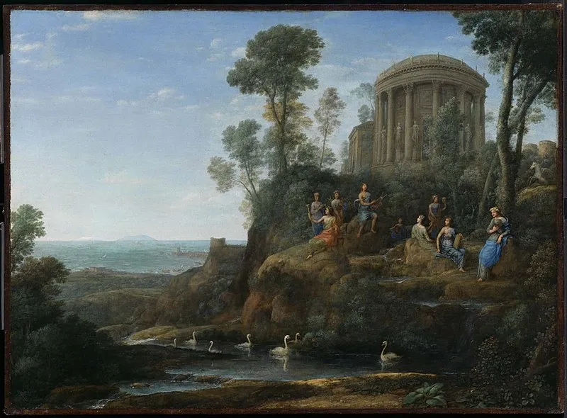
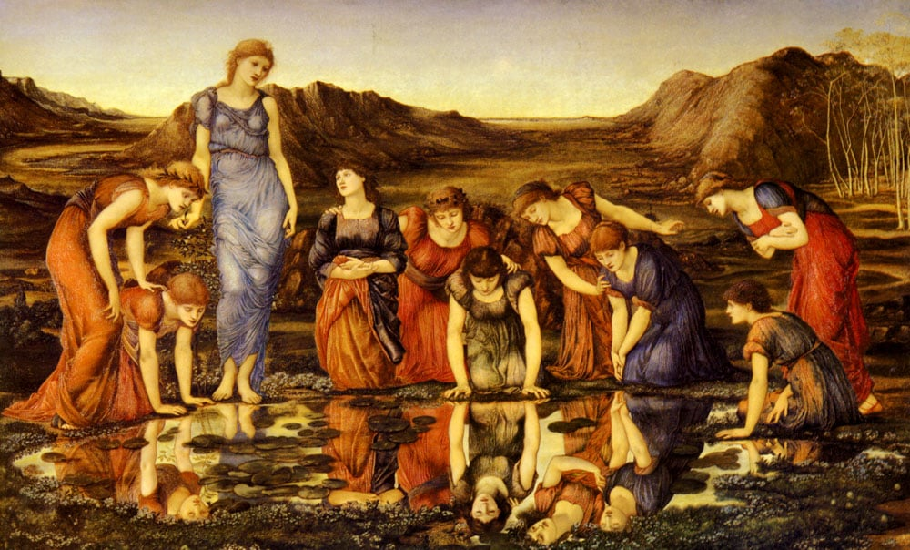
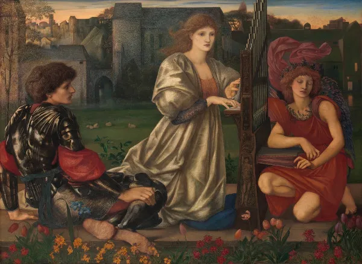

O Parnasianismo é um movimento literário que surgiu na mesma época do Realismo e do Naturalismo, no final do século XIX. De influência e tradição clássica, tem origem na França.
Principais Caracteristicas:
Objetividade e Impessoalidade:Os parnasianos valorizavam a objetividade e a imparcialidade na escrita. Rejeitavam a subjetividade e a emoção excessiva, preferindo um estilo mais distanciado e impessoal;
Busca pela Perfeição Formal:O movimento era caracterizado pela busca da perfeição técnica e formal. Isso se manifestava no rigor no uso das formas poéticas, como o soneto, e na preocupação com a métrica e a rima.
Culto à Forma e à Estética:A estética e a forma eram prioritárias. Os parnasianos enfatizavam a beleza formal e a estrutura cuidada das obras, muitas vezes com uma atenção minuciosa aos detalhes.
Idealização da Arte: A arte era vista como um fim em si mesma, desvinculada da moralidade e das preocupações sociais. Os parnasianos acreditavam que a arte deveria ser apreciada pela sua própria beleza e perfeição.
Temas Clássicos e Históricos: Frequentemente, os parnasianos exploravam temas clássicos e históricos, inspirando-se na cultura greco-romana e em mitos antigos. Essa preferência refletia uma busca pela atemporalidade e universalidade na literatura.
Desprezo pelo Sentimentalismo:Contrários ao sentimentalismo dos românticos, os parnasianos evitavam expressar sentimentos pessoais e preferiam um tom mais frio e racional.
Estilo Preciso e Formal:A linguagem dos parnasianos era cuidadosamente elaborada e formal. Usavam palavras e construções precisas para alcançar uma clareza e um impacto estético.
Rejeição do Romantismo:O Parnasianismo se posicionou como uma reação ao Romantismo, rejeitando seu foco na subjetividade, na emoção e na idealização da natureza.
Contexto Histórico:
A segunda metade do século XIX foi um período em que a literatura europeia buscou novas formas de expressão, as quais estavam em sintonia com as mudanças que ocorriam em diferentes esferas da sociedade e em diferentes áreas do conhecimento. Nesse contexto, por exemplo, teses científicas e sociológicas eram desenvolvidas e difundidas, como o determinismo social.
O parnasianismo, então, surgiu como um movimento concomitante ao realismo e ao naturalismo, porém tendo o gênero lírico como sua principal manifestação.
Obras do período:

Apolo e as Musas no Monte(1680)-Claude Lorrain

O Espelho de Venuz(1875)-Edward Burne-Jones

A canção do amor(1877)-Edward Burne-Jones
Obras literárias:
PERÍODOS:
AUTORES:
OBRAS LITERÁRIAS:
REALISMO:
Aluísio Azevedo
Casa de pensão (1883)
Raul Pompeia
O Ateneu(1888)
Machado de Assis
Memórias póstumas de Brás Cubas(1881)
NATURALISMO:
Aluísio Azevedo
O cortiço (1890)
Adolfo Caminha
Bom-crioulo (1895)
Júlio Ribeiro
A carne (1888)
PARNASIANISMO:
Vicente de Carvalho
Relicário (1888)
Olavo Bilac
Crônicas e novelas (1894)
Raimundo Correia
Versos e versões (1887)
Contexto Histórico Geral:
A segunda metade do século XIX foi marcada por muitos acontecimentos históricos, incluindo a Segunda Revolução Industrial e mudanças estruturais no Brasil:
Segunda Revolução Industrial:
A Segunda Revolução Industrial foi uma fase de desenvolvimento tecnológico que ocorreu entre 1850 e 1945, aproximadamente. Caracterizou-se pela introdução de novas técnicas e fontes de energia, como o petróleo e a eletricidade, e pelo uso de tecnologias da comunicação e da mobilidade.
Utilizou-se da energia elétrica e do petróleo como fontes de energia, sendo o aço uma das principais matérias-primas. A partir de então, teve-se o aprimoramento de uma série de setores industriais e o surgimento de novas indústrias, o que refletiu de forma direta no sistema econômico, no ordenamento territorial e na vida cotidiana.
No Brasil:
Na metade do século 19, o Brasil passou por uma série de transformações políticas, sociais e econômicas importantes
Reinado de Dom Pedro II: Dom Pedro II, que assumiu o trono em 1831 após a abdicação de seu pai, Dom Pedro I, foi um governante central durante a metade do século 19. Seu reinado, que durou até 1889, foi marcado por um período de relativa estabilidade política e avanços em várias áreas.
Abolição da Escravatura: O movimento para a abolição da escravatura ganhou força na segunda metade do século 19. Em 1850, foi aprovada a Lei Eusébio de Queirós, que proibiu o tráfico de escravos. O processo culminou com a promulgação da Lei Áurea em 13 de maio de 1888, que aboliu a escravidão no Brasil. Essa mudança teve um impacto profundo na sociedade brasileira, mas também gerou desafios para a integração dos ex-escravizados na sociedade.
Crescimento Econômico e Modernização: A economia brasileira começou a se diversificar e modernizar durante este período. O café tornou-se a principal exportação do país, especialmente na região do Vale do Paraíba e no estado de São Paulo. O crescimento das plantações de café ajudou a impulsionar a economia e a modernização das infraestruturas, como a construção de ferrovias.
Guerra do Paraguai: O Brasil participou da Guerra do Paraguai (1864-1870), uma das mais importantes guerras da América do Sul na época, ao lado de Argentina e Uruguai, contra o Paraguai. A guerra teve grandes custos humanos e financeiros, mas também consolidou o papel do Brasil como uma potência regional.
Movimentos Políticos e Sociais: Durante este período, o Brasil viu a formação de movimentos políticos e sociais, incluindo a crescente pressão por reformas e a consolidação das ideias republicanas, que eventualmente levariam à Proclamação da República em 1889, pouco após a abolição da escravatura.
Modernização e Urbanização: As cidades brasileiras começaram a se modernizar, com o crescimento das cidades portuárias e a construção de novas infraestruturas. O período também viu o início de um processo de urbanização, com a expansão das cidades e a melhoria das condições urbanas, embora ainda houvesse grandes desafios.